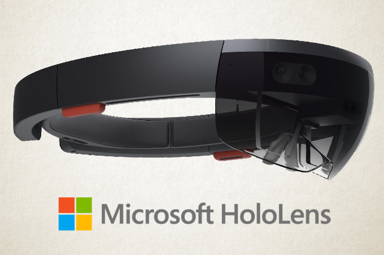
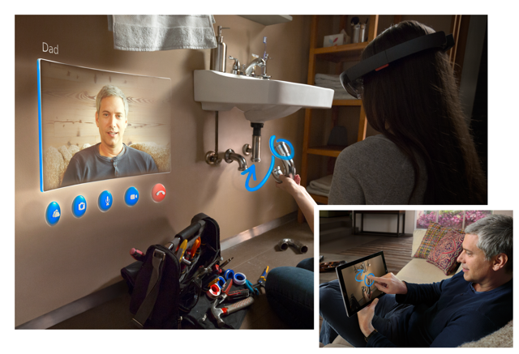

Augmented reality adalah salah satu teknologi dalam bidang informatika yang sudah cukup terkenal. Augmented reality merupakan penggabungan antara dunia nyata dengan objek-objek yang bersifat maya/digital. Penggabungan ini dapat dilihat secara langsung atau dengan menggunakan alat-alat khusus tertentu. Tambahan objek yang dilihat diciptakan oleh komputer yang dibantu dari input dari komponen-komponen komputer lainnya, seperti data GPS, gambar, suara, video, dll. Berbeda dengan virtual reality yang menggantikan seluruh dunia nyata yang kita rasakan menjadi sebuah lingkungan yang baru yang tidak nyata.
Cikal bakal dari perkembangan teknologi augmented reality bermulai dari tahun 1968, yaitu seorang tokoh dalam bidang komputer yang bernama Ivan Sutherland yang menciptakan head-mounted display pertama yang gambarnya diciptakan dari komputer. Pada tahun 1974, seorang tokoh dalam bidang komputer lainnya yang bernama Myron Krueger menciptakan artificial reality yang bernama Videoplace yang merupakan gabungan antara kamera video dengan proyektor yang menghasilkan lingkungan dengan manusia yang interakif. Augmented reality sendiri mulai dikenalkan pada dunia pada tahun 1990 oleh Tom Caudell. Tahun 1998 adalah tahun dimana teknologi augmented reality mulai digunakan, yaitu untuk menandakan garis kuning pada pertandingan futbal pada televisi. Seorang ahli komputer yang bernama Hirokazu Kato membuat sebuah open-source toolkit untuk pengembangan teknologi berbasis augmented reality yang bernama ARToolKit pada tahun 2000. Semenjak inilah, teknologi augmented reality mulai berkembang lebih lanjut.
Augmented reality sudah menjadi salah satu teknologi yang sangat berkembang pada zaman sekarang. Augmented reality juga sudah dimanfaatkan dalam beberapa bidang, misalnya kesehatan, edukasi, hiburan, dan lain-lain. Sudah cukup banyak benda yang menerapkan teknologi augmented reality, misalnya smartphone dan juga platform-platform khusus lainnya yang dikhususkan sebagai alat untuk augmented reality. Aplikasi yang menerapkan augmented reality di dalamnya antara lain Pokemon GO dan Mata-mata Pasar Seni yang sudah tersedia di smartphone berbasis Android maupun iOS. Selain smartphone, ada juga platform khusus lainnya yang menerapkan teknologi augmented reality, yaitu Microsoft HoloLens.
Microsoft HoloLens adalah salah satu head-mounted display sekaligus smartglasses yang dirilis oleh Microsoft Corporation pada Maret 2016. Microsoft HoloLens ini dikembangkan pada Project Baraboo yang dimiliki oleh perusahaan ini. Microsoft HoloLens sendiri sebenarnya bukanlah teknologi smartglasses yang murni menerapkan teknologi augmented reality. Microsoft HoloLens menerapkan teknologi mixed reality yang memungkinkan pengguna mendapatkan fitur virtual reality dan augmented reality.
Microsoft HoloLens sendiri dilengkapi dengan CPU dari Intel, yaitu Intel Cherry Trail dengan clock 1 GHz dan RAM sebesar 2 GB. Selain adanya CPU dan GPU dari Intel tersebut, Microsoft HoloLens juga menggunakan memori tambahan untuk unit prosesor, yaitu HPU (holographic processing unit) RAM sebesar 1 GB. Microsoft HoloLens juga memiliki kapasitas penyimpanan flash memory sebesar 64 GB. Terdapat juga kamera dengan ketajaman 2,4 Megapixel dan sensor gestur beserta accelerometer, gyroscope, dan magnetometer. Untuk melengkapi fungsionalitas Microsoft HoloLens, terdapat juga konektivitas Wi-Fi dan Bluetooth.
Microsoft HoloLens bekerja dari berbagai macam masukan dari penggunanya. Contoh asal masukan yang dapat diberikan oleh pengguna dapat berasal dari kemiringan kepala. Dengan memiringkan kepala saat menggunakan Microsoft HoloLens, dapat dianggap sebagai masukan dari pengguna dalam Microsoft HoloLens. Gestur pengguna seperti gerakan tangan juga akan dianggap oleh Microsoft HoloLens sebagai masukan untuk aksi-aksi tertentu yang harus dilakukan oleh perangkat tersebut. Selain itu, Microsoft HoloLens juga dapat menerima masukan berupa suara dari pengguna.
 Sebagai sebuah alat untuk mendukung fitur mixed reality (beserta augmented reality), Microsoft HoloLens juga dilengkapi dengan berbagai aplikasi dan software lainnya. Aplikasi yang terdapat pada Microsoft HoloLens antara lain Cortana sebagai virtual assistant, Holograms yang dapat memberikan gambaran sebuah objek 3D, HoloStudio untuk 3D modelling, Skype untuk video-calling dengan beberapa tambahan lainnya, HoloTour yang dapat memberikan pengguna pengalaman perjalanan ke tempat lain secara audiovisual, dan juga Minecraft dengan visualisasi yang lebih menarik, yaitu dalam dunia nyata dengan memanfaatkan fungsi hologram dari Microsoft HoloLens. Microsoft HoloLens juga dapat berfungsi sebagai penunjuk jalan, dengan menggunakan Microsoft HoloLens sambil berkendara, pengguna akan lebih jelas mengetahui jalan mana yang harus diambil untuk pergi selanjutnya tanpa mengalami ambiguitas.